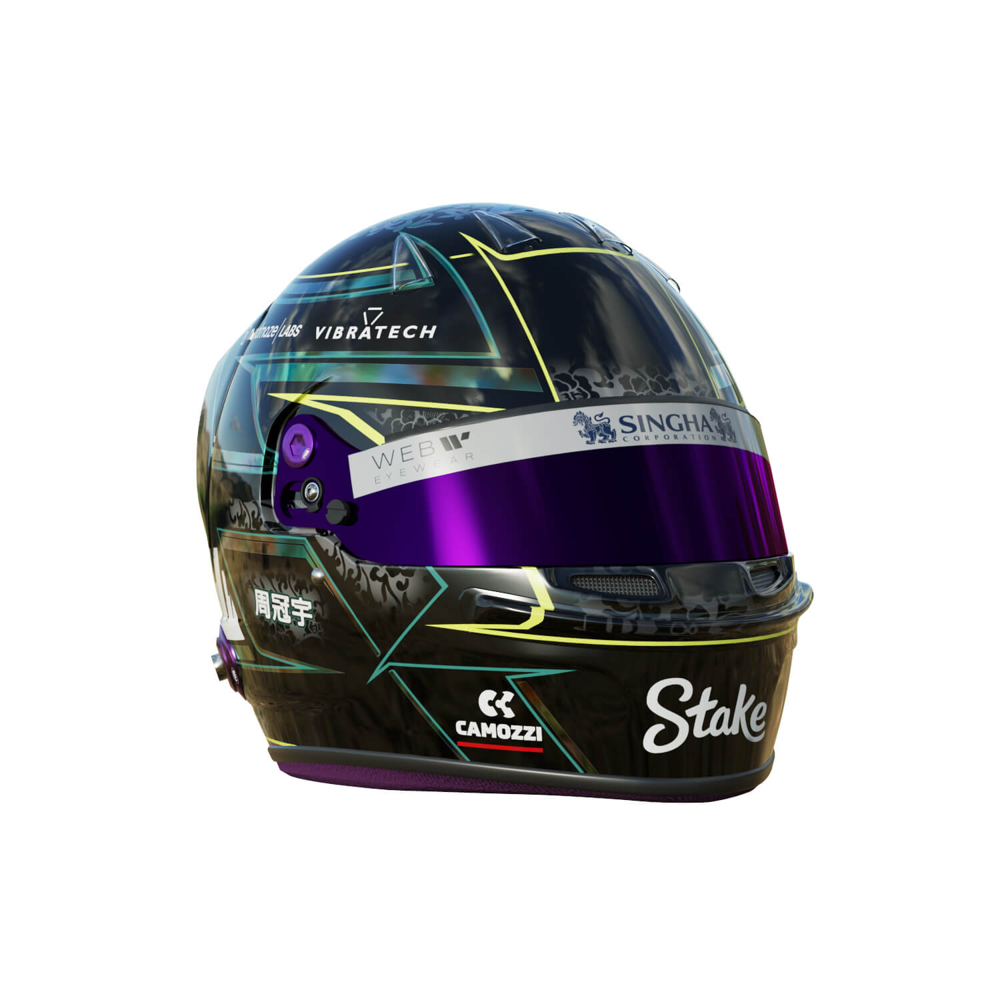
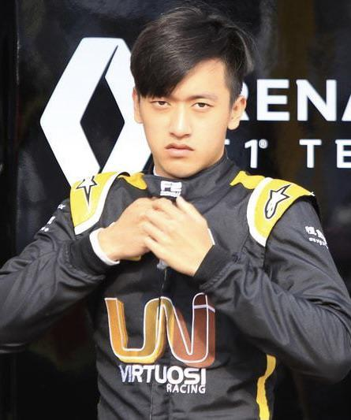
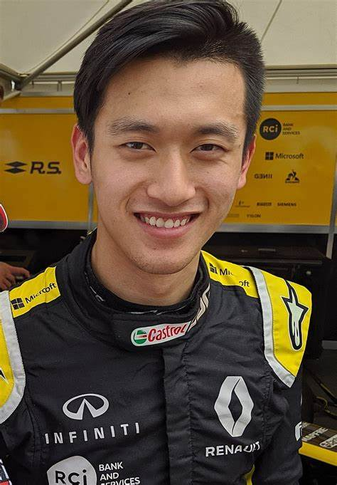

Zhou Guanyu
- Team: Kick Sauber
- Land: China
- Geburtsort: Shanghai, China
- Geburtsdatum: 30.05.1999
- Alter: 25
- Podien: 0
- Grands Prix gefahren: 65
- Weltmeisterschaften: 0
- Team: Kick Sauber
- Fahrernummer: 24
China hatte noch nie einen Grand-Prix-Starter unter seinen Bürgern gehabt - bis Zhou Guanyu diesen Zustand änderte, nachdem er 2022 die Nominierung für sein F1-Debüt für Alfa Romeo, jetzt Kick Sauber, erhalten hatte. Der in Shanghai geborene Rennfahrer besuchte 2004 im Alter von fünf Jahren den ersten Grand Prix seiner Heimatstadt und feuerte seinen Helden Fernando Alonso an. Doch nachdem ihn das Rennfieber gepackt hatte, setzte sich der Chinese das ehrgeizige Ziel, der erste F1-Rennfahrer seines Landes zu werden – und schaffte damit ein Kunststück, das Ma Qinghua, der einzige andere chinesische Fahrer, der an einem Formel-1-Wochenende teilnahm, nie schaffte. Zhou bewies Mut und Hingabe und setzte seinen Plan in die Tat um, indem er im Alter von nur 12 Jahren mit seiner Familie nach England zog, um seine Motorsportambitionen zu verfolgen. Ein zweiter Platz in der italienischen F4-Meisterschaft 2015 bewies, dass Zhou das richtige Zeug dazu hatte - eine Tatsache, die Ferrari bereits bemerkt hatte, die ihn ein Jahr zuvor in ihrer Fahrerakademie unter Vertrag genommen hatten. Ein Wechsel in die Renault-Akademie für 2019 fiel mit seinem Debüt in der Formel 2 zusammen, wobei Zhou sein Selbstvertrauen in der Serie durch mehrere Siege und Pole-Positions in drei Saisons aufbaute, was dazu führte, dass er 2021 um den Fahrertitel kämpfte. Das reichte aus, um Teamchef Fred Vasseur davon zu überzeugen, Zhou für 2022 zu vertrauen und ihn neben Ex-Mercedes-Pilot Valtteri Bottas einzusetzen – so konnte Zhou seinen Traum verwirklichen, in der Formel 1 zu fahren, und sogar sehen, wie er sich gegen seinen eigenen Kindheitshelden Fernando Alonso schlägt.
 